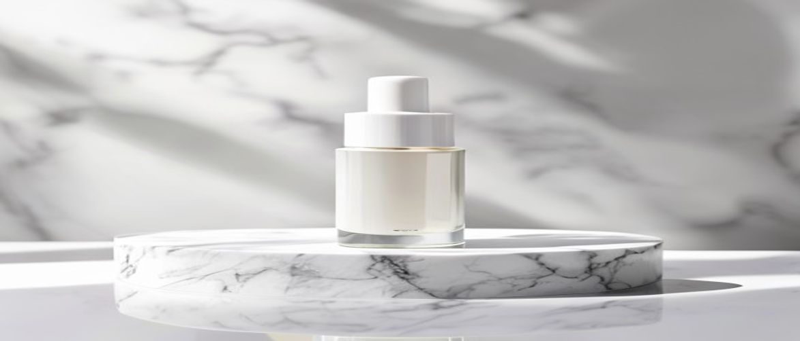

Navigating the vast world of skincare can be daunting, especially when searching for a product that truly delivers on its promises. When considering potent antioxidants, many ask: is clinical vitamin c serum the right choice for their skin concerns?
This comprehensive guide will delve into the science and benefits behind this highly acclaimed serum, helping you understand why it's a cornerstone in many professional skincare routines and a top recommendation from dermatologists for achieving a healthier, more radiant complexion.
The iS Clinical Vitamin C Serum, particularly the popular Pro-Heal Serum Advance+, stands out for its unique blend of L-Ascorbic Acid and complementary botanicals, designed to offer robust antioxidant protection and address a myriad of skin concerns. This clinical formula is engineered to enhance your skin's resilience against environmental stressors.
Furthermore, its carefully balanced composition makes it suitable for various skin types, including those prone to sensitivity, helping to fortify the delicate skin barrier. Therefore, it's not just about brightening; it's about comprehensive skin health.
The iS Clinical Vitamin C Serum is ideal for individuals seeking to combat signs of aging, address hyperpigmentation, or protect their skin from environmental damage. It is particularly beneficial for those with mature skin, sun-damaged skin, or anyone looking to enhance their skin's overall brightness and health.
Its gentle yet effective formulation also makes it a suitable choice for those with mild to moderate sensitivity, provided a patch test is performed. If you're looking for a medical-grade skincare solution, this serum offers a robust option.
The efficacy of the iS Clinical Vitamin C serum lies in its meticulously chosen, high-quality ingredients, which work in harmony to deliver significant improvements. This clinical formula prioritizes active compounds known for their dermatological benefits, ensuring a potent and effective product.
The synergy between these components is what truly sets this medical-grade skincare apart, offering comprehensive support for your skin's health and appearance.
| Ingredient / Feature | Skin Benefit / Scent Role |
|---|---|
| L-Ascorbic Acid (15%) | Potent antioxidant, stimulates collagen, brightens skin, reduces hyperpigmentation. |
| Copper Tripeptide-1 | Promotes wound healing, reduces inflammation, stimulates collagen and elastin. |
| Zinc Sulfate | Anti-inflammatory, reduces redness, supports healing, antioxidant. |
| Arbutin | Natural skin brightener, targets hyperpigmentation, reduces dark spots. |
| Olive Leaf Extract | Antioxidant, anti-inflammatory, provides hydration, protects skin barrier. |
L-Ascorbic Acid is the most biologically active and well-researched form of Vitamin C, renowned for its powerful antioxidant capabilities. It neutralizes free radicals, which are unstable molecules that damage skin cells and accelerate aging, thereby protecting your skin from environmental aggressors.
Furthermore, it is an essential co-factor in collagen synthesis, meaning it helps your skin produce more collagen, leading to firmer, more youthful-looking skin. This makes it a cornerstone of effective anti-aging strategies.
Clinical studies show that L-Ascorbic Acid concentrations of 10-20% are most effective, and iS Clinical's 15% formulation is optimally balanced for both efficacy and tolerability, ensuring maximum benefit without excessive irritation.
Copper Tripeptide-1 is a naturally occurring peptide that plays a vital role in skin regeneration and repair. It enhances the production of collagen and elastin, key proteins responsible for skin's structure and elasticity, leading to improved firmness and reduced wrinkle depth.
Additionally, it possesses significant anti-inflammatory and wound-healing properties, making it excellent for calming irritated skin and supporting the recovery process after minor skin damage. This ingredient is crucial for maintaining a healthy skin barrier.
To maximize the benefits of your iS Clinical Vitamin C serum, proper application is key. Integrating it correctly into your professional skincare routine ensures that its potent ingredients can work most effectively to transform your skin.
Following these steps will help you achieve optimal results, enhancing skin texture and overall radiance.
Over-application or improper layering can diminish the serum's effectiveness and potentially irritate your skin. Avoid mixing it directly with other strong actives like high-concentration retinoids or exfoliating acids in the same application, unless specifically advised by a dermatologist.
Furthermore, ensure the product is stored correctly, away from direct sunlight and extreme temperatures, to maintain its stability and potency over time. This preserves the integrity of the clinical formula.
Always perform a patch test on a small area of skin before incorporating any new potent serum, especially if you have hypersensitive skin, to check for adverse reactions.
Understanding both the advantages and potential drawbacks of any skincare product is essential for making an informed decision. The iS Clinical Vitamin C serum, while highly praised, has its unique considerations.
Weighing these factors will help you determine if this medical-grade skincare product aligns with your skin's needs and your expectations for a professional skincare routine.
Yes, while potent, the iS Clinical Vitamin C serum, particularly the Pro-Heal Serum Advance+, is formulated with soothing ingredients like olive leaf extract and zinc sulfate, making it generally suitable for many sensitive skin types. However, always perform a patch test first to ensure compatibility, especially if you have known hypersensitive skin.
Results can vary, but many users report seeing initial improvements in skin brightness and texture within 2-4 weeks of consistent daily use. Significant changes in hyperpigmentation and fine lines typically become more apparent after 8-12 weeks, as collagen production and cellular turnover improve.
It is generally recommended to use Vitamin C in the morning and retinol in the evening to avoid potential irritation and ensure optimal efficacy of both ingredients. If you wish to use them together, consult with a dermatologist on how to layer them safely within your professional skincare routine.
For hyperpigmentation, the iS Clinical Super Serum Advance+ is often recommended due to its potent blend of L-Ascorbic Acid, Copper Tripeptide-1, and Arbutin. This combination specifically targets dark spots and uneven skin tone, delivering a powerful brightening effect and improving overall skin texture.
For those serious about investing in their skin's health and appearance, the iS Clinical Vitamin C serum represents a highly effective and scientifically supported choice. Its clinical formula, robust antioxidant protection, and ability to address multiple skin concerns like hyperpigmentation and aging make it a standout product in the medical-grade skincare market.
While it comes with a premium price tag, the demonstrable results and the trust it garners from dermatologists often justify the investment for many. Elevate your professional skincare routine and experience the transformative power of this serum today.
Have questions or a comment on the post? Send us a message and we will get back to you soon.